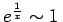

Inhalt Index DeskTop Bronstein

 Unendliche Reihen Funktionenreihen Asymptotische Potenzreihen
Unendliche Reihen Funktionenreihen Asymptotische Potenzreihen


Zwei Funktionen f(x) und g(x), die für definiert sind, heißen asymptotisch gleich für , wenn gilt:
bzw.
Dabei wird in o(g(x)) das LANDAU-Symbol ,,klein o`` verwendet. Wenn (7.91a bzw. b) erfüllt ist, schreibt man auch .
| Beispiel A |
|
. |
| Beispiel B |
|
. |
| Beispiel C |
|
. |